Starting
我写这篇文章可能不能完整、准确地表达我自己。因为使用中文的时候我可以用各种方式去表达自己，但是我的英文限制了我和我的汉语。所以如果你有任何疑问，请向我提问。请不要英文某一个字或者一段话去曲解我的意思。
I may not be able to express myself completely and accurately when I write this article. Because I can express myself in various ways when I use Chinese, but my English limits me and my Chinese. So if you have any questions, plese ask me. Please don't misinterpret my meaning by one word or one paragraph in English.
我写下这些内容时的心情就好像小六子被问到底吃了几碗凉粉。我知道他们并不在乎我肚子里有几碗凉粉，他们仅仅想看我开膛破肚。
I am writing this as if Master Sixi was asked how many bowls of cold noodles he had eaten. I know they don't care how many bowls of cold noodles I have in my stomach, they just want to see me open my stomach.
【让子弹飞】 讲茶大堂 六爷白死_哔哩哔哩 (゜-゜)つロ 干杯~-bilibili
十五年前，一个普通中国学生不需要任何材料就可以对共产党充满愤恨，因为在那个时候不骂几句共产党或者政府就显得我被洗脑、没有独立思考的能力。
Fifteen years ago, I didn't need any material to be filled with resentment against the Communist Party, because at that time it looked like I was brainwashed and incapable of independent thinking without calling out the Communist Party or the government a few times.
十年前，我面对西方媒体的报道会显得非常的沮丧、懊恼。
Ten years ago, I would have looked very frustrated and chagrined in the face of Western media coverage.
五年前，我还没有离开过中国。我还不能想象一些人会真的想象新闻原来真的可以凭空造假，而毫不觉得羞愧。
Five years ago, I hadn't left China. I couldn't imagine that some people would really imagine that news could be faked out of thin air without feeling ashamed.
现在我面对这样的新闻我的思考是实现“中华人民共和国万岁，世界人民大团结万岁”的理想还需要多久。
Now that I am faced with such news my thoughts are how long it will take to realize the ideal of "Long live the People's Republic of China and long live the great unity of the world's people".
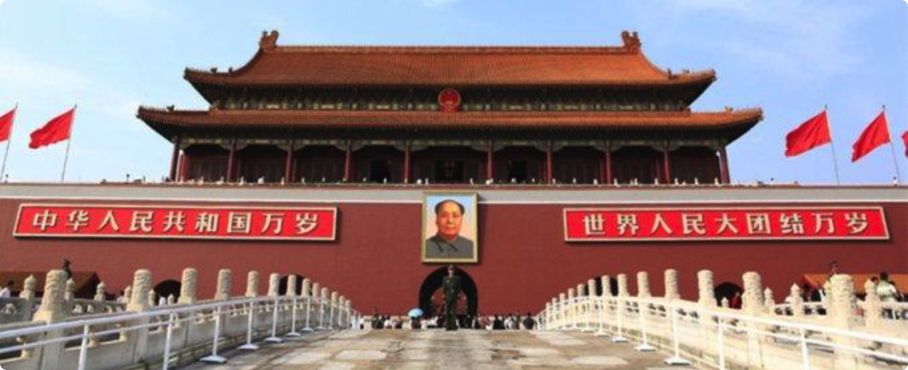
我在写这篇内容的时候很平静，对我来说我从高中开始使用谷歌已经见多了足够多的光怪陆离，对很多事情已经见怪不怪了。
我只是想讲这些内容分享给你们。我知道绝大部分西方人不知道这些也可以活的很好。只是我偶尔也会从全人类的角度去思考问题，我觉得真相还是挺重要的。
I'm writing this calmly, for me I've seen enough of the light and the dark since I started using Google in high school to be unsurprised by many things.
I just wanted to share this content with you. I know that the vast majority of Westerners can live without knowing this. It's just that I occasionally think about things from the perspective of all humanity, and I think the truth is still important.
正如我一直和你们说的，我们去中国玩一玩吧。我既想看看外滩的赛博朋克，也想看看老县城的破败。我既不喜欢CCTV的载歌载舞，我也不想看BBC的莫名其妙。
同情心被利用，恐惧被支配。所有人都用情绪决定立场，用立场决定政策，最终的结果可能和预期完全相反。越是对中国和中国的崛起抱有警惕，你们越应该尊重理性、发现真相，避免站在事实的反面。
As I've been telling you guys, let's go to China for a bit. I want to see both the cyberpunk of the Bund and the crumbling of the old county. I don't like the song and dance on CCTV nor do I want to watch the inexplicable on the BBC.
Compassion is exploited and fear is dominated. Everyone uses emotions to determine stance and stance to determines policies, and the eventual outcome may be the exact opposite of what is expected. The more wary you are of China and its rise, the more you should respect rationality, uncover the truth and avoid being on the opposite side of the truth.
有一点我要声明的是，造谣、抹黑和言论自由是两回事。BBC等一众西方媒体尤其喜欢使用言论自由作挡箭牌来造谣、抹黑。
One thing I want to state is that disinformation, smear and freedom of speech are two different things.
The BBC and other western media especially like to use freedom of speech as a shield to create rumors and smears.
下面我会用美国的一些例子，不是说我对美国有 多大偏见而是我相对来说更了解美国。
I'll use some examples from the U.S., not that I'm biased against the U.S., but I know the U.S. relatively well.
BBC is BB China, CNN is CN(China) No
BB is "pussy pussy" in Chinese, meaning talking shit.
CN is domain for China
我用这个视频来告诉你我平时看BBC和CNN新闻的感觉，以及西方媒体是如何炮制中国新闻的：
I'll use this video to show you how I usually feel watching BBC and CNN news, and how the Western media cooks up China news.
英国小伙：都在喷BBC，我看不下去了！ CNN - YouTube British guy: are spraying the BBC, I can't watch it
New clues to forced labor in Xinjiang！调查新疆棉花事件，BBC错过了重要细节，漠叔发现强迫劳动新线索 - YouTube
John Sudworth作为BBC驻华记者九年，他完全有一个完整的中国画面。可是他在BBC的报道中非常喜欢去创造一些不存在的剧情，上一个视频已经给你们介绍了。
这个视频展示了那个John Sudworth声称无法进入的工厂，同时解释了保安为什么不让John Sudworth进入（在之后的一个视频中，保安蒋勇但是禁止Jonh进入是因为John不肯戴口罩）。
John Sudworth has been the BBC's correspondent in China for nine years, and he totally has a complete picture of China. But he's very fond of creating non-existent storylines in his BBC reports, as you were introduced to in the last video.
This video shows the factory that John Sudworth claims is inaccessible, and explains why the security guards won't let John Sudworth in (in a later video, security guard Jiang Yong forbids Jonh from entering because John won't wear a mask).
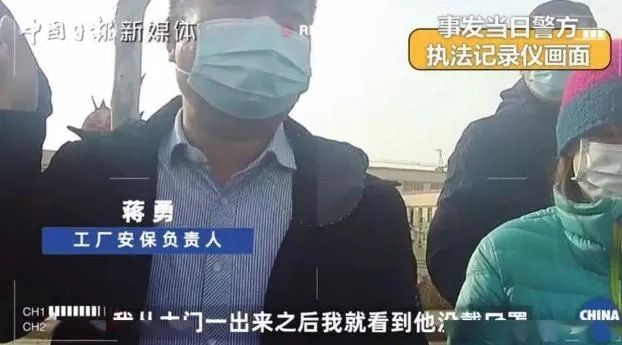
作为一个中国人，如果你不仅经过我同意就对我进行拍摄，我也会很不高兴并且阻止你。我能够想象John Sudworth为了节目效果，而故意擅自闯入，然后声称遭到阻止。
难道保安不应该阻止吗？
As a Chinese person, if you were filming me without my permission, I would be upset and stop you. I can imagine John Sudworth deliberately trespassing for the sake of the show and then claiming to have been stopped.
Shouldn't security have stopped it?
BBC China correspondent John Sudworth moves to Taiwan after threats - BBC News - YouTube
外交部发言人华春莹3月31日就BBC驻华记者沙磊离任一事表示，John离任前没有履行一个外国常驻记者离任前应该履行的手续，他是不辞而别。新疆一些民众和实体打算因沙磊制造涉疆假新闻起诉他，这完全是民间行为，是民众运用法律手段来维护自身荣誉和利益。如果沙磊认为他的报道是公正客观的，那就应该勇敢应诉。但是他跑什么？说明了什么问题？华春莹表示，BBC散布大量虚假信息，遭到中国人民强烈反对。BBC在国际议题上的造假行为，甚至到了BBC内部人都看不下去的地步。
Foreign Ministry spokesperson Hua Chunying said on March 31 on the departure of BBC China correspondent Sha Lei (John) that John did not fulfill the formalities that a foreign resident journalist should fulfill before leaving his post, and he left without saying goodbye. Some people and entities in Xinjiang intend to sue Sha Lei for creating fake news related to Xinjiang, which is a purely civil act, and the people use legal means to protect their own honor and interests. If Sha Lei thinks his report is fair and objective, then he should be brave enough to answer the lawsuit. But what did he run? What does it mean? Hua Chunying said that the BBC spreads a lot of false information, which is strongly opposed by the Chinese people. the BBC's falsification on international issues has even reached a point where BBC insiders can't even look at it.
John在中国呆了9年，他的各种污蔑中国的新闻多的数不过来。中国政府管过吗？没有，因为黑中国的人太多了，John根本排不上号。那为什么这次John畏罪潜逃呢？
John has been in China for 9 years and his various smear stories about China are too many to count. Did the Chinese government ever care it? No, because there are too many people who blacken China, John simply can not be ranked on the top. So why did John abscond this time?
- 他真的说了谎He really did lie.
- 一部分人的的确确被John的谎言准确伤害到了，受害者群体集中，他们真的准备起诉John。（受害者是一些新疆的棉花企业）Some people are indeed hurt by John's lies, and the victims are so concentrated that they are really ready to sue John. (The victims are some cotton companies in Xinjiang)
- 造谣在中国真的会被判刑 Disinformation in China can really be sentenced to jail
可是BBC是怎么报道John离开中国大陆的？BBC说他收到了威胁。是吗？是的，John收到了正义的威胁，而他不敢面对。
But how did the BBC report that John left mainland China when it said he received threats? Did it? Yes, John received threats of justice, and he was afraid to face them.
Thank this guy numuves, he saved me so much time to hit John's face.
Test
如果你认真观看了上面的视频并且认真学习了BBC的拍摄方式，那么我们来一点点测试吧。
If you have watched the video above and studied the BBC's filming method carefully, then let's test it a little.
How to report while being manhandled by security in China - BBC News - YouTube
我没有仔细听John在说什么（我想大概就是说自己被阻止报道），但是我非常努力地区辨别那个中国男人在说什么。那个男人只说了一个内容：”这里是机动车道，不要堵住交通，遵守交通规则，到人行道去。“
I didn't listen carefully to what John was saying (I think it probably means that he was stopped from reporting), but I tried very hard to discern what the Chinese man was saying. The man only said one thing: "This is a motorway, don't block the traffic, obey the traffic rules and go to the sidewalk. "
正如我一直说的，John在中国呆了9年。他非常了解如何创造一些剧情。
As I keep saying, John has spent 9 years in China. He knows very well how to create some drama.
China struggles to contain virus- BBC News - YouTube
首先BBC介绍了李医生。李医生很伟大，而且当地警察确实做错了。在李医生去世当天，一向寂静的微信朋友圈大家都在赞扬李医生，谴责当地政府、警方。但是这个和中国和共产党有什么关系？柏林警察和黑帮勾结，所以德国SPD是个大坏蛋？德国是个流氓国家？而这个偷换概念的逻辑把戏，BBC一直在玩。
First the BBC introduced Dr. Lee. Dr. Li was great, and the local police did do wrong. On the day of Dr. Li's death, everyone in the ever-silent WeChat circle of friends praised Dr. Li and condemned the local government and police. But what does this have to do with China and the Communist Party? The Berlin police colluded with the mob, so the German SPD is a big bad guy? Germany is a rogue state? And this trick of stealing the concept of logic, the BBC has been playing.
中国和中国人不怕被批判，但是不接受BBC这种方式。
China and the Chinese are not afraid of being criticized, but do not accept the BBC's approach.
视频第48秒那个”强制隔离“的视频来源我还没找到，我也听不清说了什么。我还在查证。
I haven't found the source of the "forced isolation" video at 48 seconds, and I can't hear what was said. I'm still checking.
我的分析：这个新闻来自去年2月份，也就是疫情开始。邻居发现某个人回家不隔离然后叫了警察（视频拍摄没有任何阻挡）。我推测那个男人从外地回来，不配合隔离并且阻挠执法。然后他们一家就被带去隔离了。类似的事情其实发生很多次。
我的分析：这个新闻来自去年2月份，也就是疫情开始。邻居发现某个人回家不隔离然后叫了警察（视频拍摄没有任何阻挡）。我推测那个男人从外地回来，伪造隔离证件或者不配合隔离并且阻挠执法。他的家人帮忙隐瞒并且阻碍执法。然后他们一家就被带去隔离了。类似的事情其实发生很多次。
My interpretation: This news comes from last February, when the outbreak started. A neighbor noticed some guy coming home and not quarantining then called the police (video was shot without any obstruction). I presume the man came back from out of town, forged quarantine papers or did not cooperate with the quarantine and obstructed law enforcement. His family helped conceal and obstruct the law. Then the family was taken to quarantine. Something like this actually happened many times.
以上是我的推测，我并不确定（我会备注我不确定的事情，但是BBC从来不会说，他让你自己在脑海想象：你看，中国不人道）。
The above is my speculation, I'm not sure (I'll make a note of things I'm not sure about, but the BBC never says that, he lets you imagine it in your own mind: you see, China is inhumane.)
在中国，不配合警察执法的现象太普遍了。以至于包括我在内的很多人都会对某一次警察按法律强制某些人而感到高兴。我觉得这个是最让我觉得可笑的。可能是因为中国的警察基本不配枪，绝大部分时候他们唯一的武器就是一根棍子和制服。
In China, it is all too common to not cooperate with police enforcement. So much so that many people, including myself, would be happy with a particular time when the police forced certain people by law. I think this one is the most ridiculous to me. Probably because Chinese police officers are basically unarmed and the vast majority of the time their only weapons are a stick and a uniform.
在美国，如果嫌疑人不配合警察，我们都是知道美国警察的执法方式。可是为什么出现了中国和隔离就让人浮想联翩？却没有人真正关心事实是什么：到底发生了什么？
In the United States, if the suspect does not cooperate with the police, we are all aware of the American police enforcement methods. But why does the occurrence of China and segregation make people think about terro moive? And no one really cares what the facts are: what really happened?
视频1分07秒的时候，两个穿着防护服的人”监视“一个人。
At 1:07 of the video, two men in protective clothing "spy" on a man.
一如既往地，BBC从来不会告诉你他们是谁，他们在哪里，他们干了什么。BCC只是在暗示你什么。
As always, the BBC never tells you who they are, where they are, or what they've done. But the BCC is just hinting at something.
2020年，我回国的时候。因为我居住在上海，所以我可以在酒店隔离7天之后可以由居委会接我回家并在家隔离7天。如果一切正常，情景就是这样的，他们派人来接我。
In 2020, when I returned to China. Because I live in Shanghai, I can be picked up by the neighborhood committee and quarantined at home for 7 days after 7 days of hotel quarantine. If everything was fine, this was the scenario and they sent someone to pick me up.
后来我被列为密切接触者（飞机上，我隔壁的大哥感染），政府派了一个人开着救护车把我送到一个特殊的隔离场所。所谓特殊的场所，其实就是一个在远郊的疗养院。我开窗就是一片湖。在特殊场所隔离的所有费用由国家承担。我们所有的人都在一个微信群里，所有人包括外国人的费用全部由国家承担。
Then I was listed as a close contact (in the plane, the older brother next to me was infected) and the government sent a man driving an ambulance to take me to a special quarantine place. The so-called special place was actually a sanatorium in the far suburbs. I opened the window to a lake. All the costs of isolation in the special place were covered by the state. All of us were in a Wechat group, and all the expenses for everyone, including foreigners, were covered by the state.
我很感谢工作人员。他们很辛苦，一整天穿着防护服，冒着危险接送我们。
I am thankful for the staff. They worked very hard, wearing protective clothing all day and risking their lives to transport us.
视频1分10秒的时候，小女孩说：”我不想被抓进去“。小女孩的妈妈（可能）：”可是他们生病了“。（BBC没有翻译下半句妈妈说的话。）
At 1:10 of the video,
the little girl says: "I don't want to get caught in".
The little girl's mother (probably): "But they're sick." (The BBC did not translate the second half of what the mother said.)
视频第2分06秒那个女孩说：有一点点，但是更多的是
The girl at 2:06 of the video says: a little, but more
BBC翻译：“But hopless”。我一点点都不相信BBC的翻译，根据我之前的经历BBC有两个花样
BBC translation: "But hopless". I don't trust the BBC translation at all, according to my previous experience the BBC has two tricks
问女孩的问题可能就是其他的问题（这个真的发生过）Ask the girl the question may be other questions (this really happened)
女孩表达的内容是pro Chia,比如但是充满希望
The girl expresses the content of the pro Chia, for example, but full of hope (Otherwise why is the BBC editing behind the but?).
同样的故事 发生在武汉的一个医护人员采访中，医护人员表达：”看到很多人去世，压力非常大，非常累，但是我们看到希望。。。“。
BBC在解说中只翻译了前一半，后一半表达希望的内容直接被忽视。
The same story happened in Wuhan in an interview with a health care worker who expressed: "It is very stressful and tiring to see many people die, but we see hope. ".
The BBC only translated the first half in its narration, and the second half expressing hope was simply ignored.
2:44，BBC says: To be more censorship in this hostipol。
事实是什么？What is the fact?
这是一个小区，那个拍摄的中国男人说：我们进不去这个小区。
It was a community, and the Chinese man who was filming said: We can't get into this community.
我父母当时也有类似的情况，小区大门口会有人记录进出小区(我的城市500万人，一共感染66人)。
My parents had a similar situation at the time, where someone at the community gate would record the entry and exit of the community (5 million people in my city, 66 infections in total).
那个破败的床其实是保安在自己的保安室的设置，对于我来说这个是非常常见的一个设置而已。BBC想表达什么？你猜！
That crummy crib is actually a security guard's setup in his own security room, and for me this is just a very common setup. What is the BBC trying to say? You guess!
这个保安（是不是特别像警察？）身后的小房间就是保安室，在每一个小区或者工厂的门口都有这个设施。保安的工作就是开关大门，记录来访人员或者打扫卫生。你觉得保安室里的小床会有多大？
This security guard (is it particularly like a police officer?) The small room behind the guy is the security room, which is found at the entrance of every community or factory. The security guard's job is to open and close the gate, record visitors or clean up. How big do you think the crib in the security room will be?
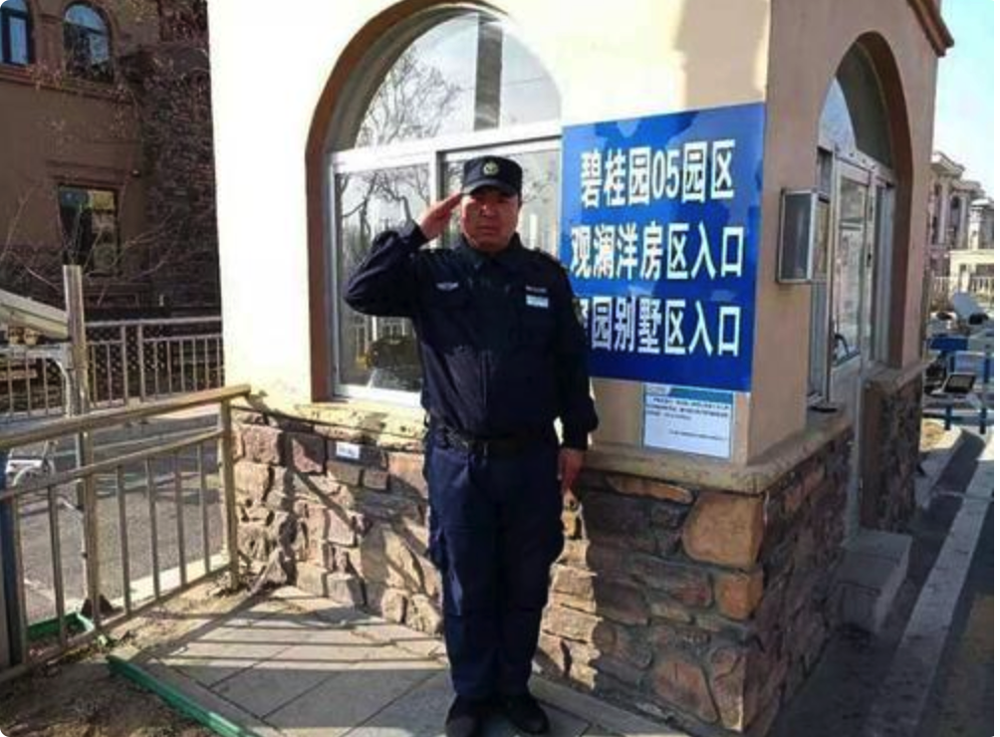
视频第3分24分，BBC说政治风险相关的。
3:24，the BBC says the political risk is related.
实际画面：被强制人不配合执法，同时采取了踢打、撕咬、推搡的攻击性行为（我上面说了，攻击警察在中国真是病态的普遍，似乎没有人惧怕警察一样。）BBC甚至都不抹掉中文字幕。
Actual footage: the coerced person does not cooperate with law enforcement, while resorting to aggressive behavior of kicking, biting, and pushing (as I said above, attacks on police are really pathologically common in China, as if no one fears the police.) The BBC doesn't even erase the Chinese subtitles.
BBC Our World 2017 China New Silk Road - YouTube
Journalist: Are these all local workers?
Manager(in chinese): yeah,only this kind of large crane's operator came from China.
Narrative: but he tell me most of the jobs here will go to chinese workers and the loan to build this railway was tied to a chinese desigh.
我很抱歉，我只能把我知道的分析给你们。一一求证这些内容是非常困难的，尤其BBC会故意减掉关键内容。我只是希望让你们了解西方关于中国的新闻是如何加工处理的。
I'm sorry, I can only give you the analysis I know. It is very difficult to verify these elements one by one, especially since the BBC will deliberately hide the source, edit the videos, and subtract key elements. I just want to give you an idea of how news about China is processed in the West.
摄像镜头一点要低，要斜着拍
The camera has to be low and angled.
画面一定要浑浊、昏暗，充满恐怖气息
The picture must be muddy, dark and full of horror
共产、武装警察、监控等词汇一定要出现
Words like communist, armed police, surveillance, etc. must appear
通过各种方式让对方阻止拍摄，比如使用特别大的设备，或者离对方特别近产生压迫感。而且从来不征求对方的同意。
Use a variety of ways to get the other side to stop the shot, such as using extra-large equipment or getting extra close to the other side to create a sense of oppression. And never ask the other party for permission before video
一定要剪辑视频，最好能出现警察、栅栏或者镰刀锤子等标志。
Be sure to edit the video, preferably with signs such as police, fences or scythes and hammers
通过聊天的方式诱导路人说出一些他们需要的话，比如我很不满，我不自在。从而营造出一种人人都被压迫的真实感。
Lure passersby into saying something they need to say by chatting, such as I'm upset and I'm uncomfortable。
Thus creating a real sense that everyone is being oppressed.
My thoughts
对于最近新疆所谓的”强迫劳动“和所谓的”种族灭绝“事件，我首先表达一下自己的观点：
I would like to begin by expressing my views on the recent incidents of so-called "forced labor" and so-called "genocide" in Xinjiang.
它们都是假的。
根据新疆维吾尔自治区2010年第六次全国人口普查主要数据公报,全区人口中，汉族人口8746148人，占总人口的40.1%，各少数民族人口13067186人，占总人口的59.9%。与2000年第五次全国人口普查相比，汉族人口增加1256229人，增长了16.77%；各少数民族人口增加了2097594人，增长了19.12%。
哪一种种族灭绝会使人口越来越多？
According to Xinjiang Uygur Autonomous Region 2010 Sixth National Population Census Main Data Bulletin, the population of the region is 8,746,148 Han Chinese, accounting for 40.1% of the total population, and 13,067,186 people from various ethnic minorities, accounting for 59.9% of the total population. Compared with the fifth national census in 2000, the Han population increased by 1256,229, or 16.77%; the population of various ethnic minorities increased by 2,097,594, or 19.12%.
新疆棉花种植以机械收割为主，强迫人工采摘不经济，更不人道，为什么？
Cotton cultivation in Xinjiang is dominated by mechanical harvesting, forced manual picking is not economic and more inhumane, why?
作为一个中国人的我不能理解、不能接受也不能想象在21世纪有人屠杀我的同胞，不管他是土家族、保安族、俄罗斯族或者维吾尔族。
As a Chinese, I cannot understand, accept nor imagine that in the 21st century someone is slaughtering my compatriots, whether they are Tujia, Baoan, Russian or Uyghur.
作为一个有理想的、有思考的人，我对共产党有所理解并尝试加入，我难以想象这个组织犯这种愚蠢的错误。（我很难说服一个人并让他想象中国共产党的伟大之处，所以这一点我只自己保留。）
As an idealistic, thinking person who understands the Communist Party and tries to join it, I can hardly imagine this organization making such stupid mistakes. (I have a hard time convincing someone and getting them to imagine the greatness of the Chinese Communist Party, so that's something I'll just keep to myself.)
被低估的道德 Underestimated Ethics
新疆是一个人口小省，但是也有两千五百万人。西方媒体的数宣称城每六个人中就有一个维吾尔族成年人被关押在“集中营”中。这不仅是对中国政府的污蔑，更是对新疆两千五百万人和14亿中国人的污蔑。因为对暴行的沉默就是助纣为虐。
Xinjiang is a small province in terms of population, but it has 25 million people. Western media figures claim that one in six Uighur adults in the city are held in "concentration camps. This is a smear not only against the Chinese government, but also against the 25 million people in Xinjiang and the 1.4 billion Chinese. For silence in the face of atrocities is aiding and abetting the enemy.
是中国人沉默了吗？
Are the Chinese silent?
如何看待BBC在无证据的情况下，称「大量维吾尔族女性遭到了集体性侵和酷刑」？
What to think of the BBC's claim, without evidence, that "a large number of Uyghur women have been sexually assaulted and tortured en masse"? Please use google tran.
知乎的这一个问题有1164个网友的回答，浏览人数是9276722。我在有限的时间里浏览的几百个回答以及几千个评论，我没有发现一个人目睹、经历或者认识维吾尔族的朋友被灭绝（这个真的是一个非常奇怪的说法）。知乎上还有类似几十个这样的问题。
This one question on Zhihu has 1164 user responses and 9276722 views. of the hundreds of responses and thousands of comments I have viewed in my limited time, I have not found a single person who witnessed, experienced, or knew a Uyghur friend who was exterminated (this is a really strange statement). There are dozens of other questions like this on Zhihu.
西方人高估了自己的道德水平和欺骗能力 The West overestimates its own morality and ability to deceive
我在文章的开头已经给你们普及了BBC的制作流程。
I have already explained the BBC production process for you in the beginning of the article.
被故意忽视的声音 Voices that are deliberately ignored
- Deleted 95% of my subscriptions because I'm Chinese? Conspiracy theory? Or is it a major bug?
- YouTube tube bounced half of my subscriptions because of simplified Chinese characters? Ft. Men's Game Men's Game Playbook [Kokee Share K2] China Mainland Mainland
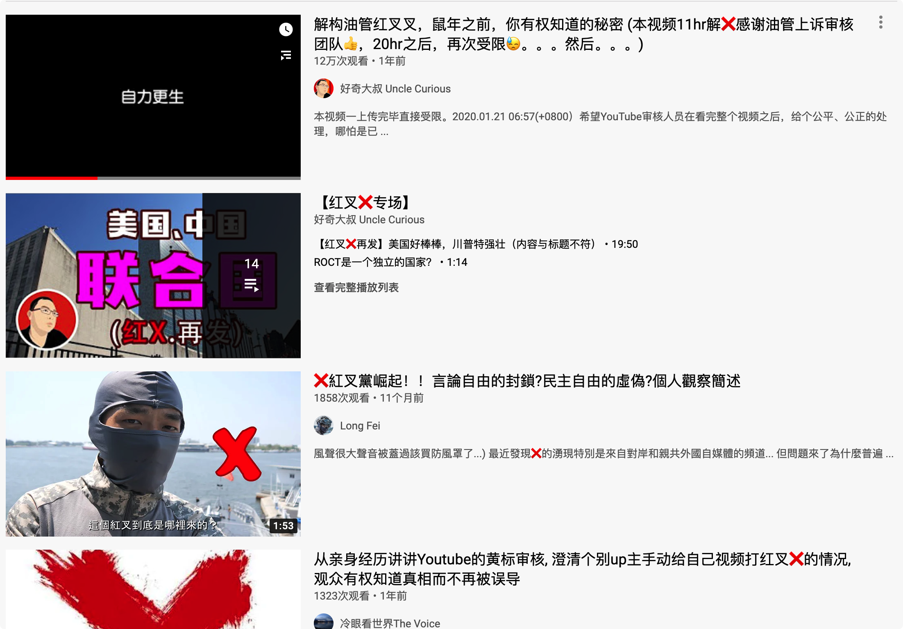
Most Chinese Youtubers use red cross in titles to indicat that YouTube has stopped their ad revenue.
这种现象太正常了。那些说出真相的节目会被YouTube移除粉丝，或者他们的节目被暂停广告收益。
This phenomenon is all too normal. Shows that tell the truth get their followers removed by YouTube or their shows have their ad revenue suspended.
我想你应该能够明白限制收益对于一个Youtuber意味着什么吧？
I think you should be able to understand what limiting revenue means to a Youtuber, right?
虚无缥缈的证据 Nebulous Evidence 证据永远是一个或者几个新疆人的口述。证据永远是郑国恩报告里的臆想的统计数据。通过8个被采访的“新疆人”，郑国恩就能得出一百万人被关押的数据。
英雄们在70年前拍到纳粹屠杀犹太人；2021年了，新疆人似乎还没有相机。
苏联红军在70年前冒着炮火冲进柏林；2021年了，似乎所以人都没有去过新疆。
美国的卫星能够看到大洋上的中国航母；2021年了，卫星似乎永远拍不到新疆的集中营。
The evidence is always the dictation of one or a few Xinjiang people. The evidence is always the imaginary statistics in Zheng Guoen's report. With eight interviewed "Xinjiang people", Zheng was able to come up with a figure of one million internees.
Heroes filmed the Nazi slaughter of Jews 70 years ago; in 2021, it seems that the people of Xinjiang still do not have cameras.
The Soviet Red Army braved artillery fire to storm Berlin 70 years ago; it's 2021, and it seems so no one has ever been to Xinjiang.
American satellites can see Chinese aircraft carriers in the ocean; it's 2021, and satellites never seem to be able to photograph the concentration camps in Xinjiang.
2020年“反华急先锋”BuzzFeed发布了很多所谓的“集中营”证据，内容太多我就不一一列举，太累人了。
在“BuzzFeed”给出的卫星地图上，声称都是经过确认的“集中营”。但是一些却空无一物。但网友“赤”查证的百度地图显示，此处为新疆乌鲁木齐县的百纳威智能终端电子产业园。
In 2020, the "anti-China vanguard" BuzzFeed released a lot of evidence of so-called "concentration camps," too much for me to list, too exhausting.
The satellite maps given by BuzzFeed claim to be confirmed "concentration camps". But some of them are empty. But the Baidu map, which was verified by netizen "赤", shows that this is the Bainawei Intelligent Terminal Electronics Industrial Park in Urumqi County, Xinjiang(english might be wrong by google transltor).
BuzzFeed also gives a location in Shule County, Kashgar. According to the report, it is "a place of detention confirmed by other sources". But after checking, "赤" found that it was actually a residential area in Shule County called "Sunny Fairview District", which was even given a "5-star rating" on Baidu Maps. ".(chinese names might be wrong via Google transator)
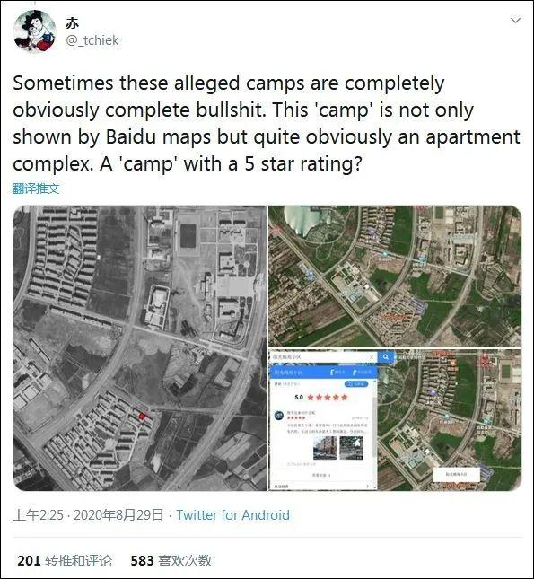
我查看了很多BBC声称是集中营的地图，我完全无法从地图上看出一栋栋建筑是什么。BBC是如何看出来的？
I've viewed many maps of what the BBC claims are concentration camps and I can't tell what a building is from the map at all. how does the BBC see that?
And which genocide will result in a growing population?
"矛盾的举动" "Contradictory Moves"
作为一个生长在东部的汉族中国人，我接触到少数民族的机会不多。就我接触到的少数民族而言，他们至少享受国家的一些额外福利：
As a Han Chinese growing up in the east, I have not had much exposure to ethnic minorities. For the ethnic minorities I have come in contact with, they enjoy at least some additional benefits from the state.
更加容易的高考（北京、上海和新疆、西藏、海南、内蒙等边远地区）Easier college entrance exams (Beijing, Shanghai, Xinjiang, Tibet, Hainan, Inner Mongolia and other remote areas)
如果你想了解更容易的高考对于中国人意味着什么，我给你一个例子。北京一个房子的价格是33000euro/m2，因为靠近某个好小学。
If you want to understand what an easier gaokao means for the Chinese, I'll give you an example. A house in Beijing costs 33,000euro/m2 because it's near some good elementary school.
少数民族额外的高考加分（你应该还记得Li吧？他因为朝鲜族的身份在高考中加了10分，可观的分数）
Extra points in the college entrance exam for ethnic minorities (Daniel should remember Li, right? He got 10 extra points on the college entrance exam because of his Korean ethnicity, a substantial score)
土葬（汉族人死后必须火化，这是一些老人无法接受的）
Earth burial (Han Chinese must be cremated after death, which is unacceptable to some elderly people)
计划生育的豁免Birth Control Exemptions
自治 Autonomy
尊重少数民族风俗习惯
我在广西山里的时候他们有自己的节日
Respect the customs of ethnic minorities
They had their own festival when I was in the mountains of Guangxi
自己的文字 Own scripts 外蒙古使用西里尔字母，内蒙古人使用传统蒙文；哈萨克斯坦使用西里尔（现在要换成拉丁字母），维吾尔族和哈萨克斯坦族人可是使用自己的文字上学、生活，政府机构也是双语办公（人民币上有五种文字，至少我在美元或者其加拿大元没有看到；我不确定印第安人和毛利人还会不会使用自己的语言和文字，政府机构能不能提供土著语言办公）
Outer Mongolia uses the Cyrillic alphabet, Inner Mongolians use traditional Mongolian; Kazakhstan uses Cyrillic (now to be replaced by Latin alphabet), but Uyghurs and Kazakhs use their own script to go to school and live, and government agencies are also bilingual (there are five scripts on the RMB, at least I don't see them on the US dollar or its Canadian dollar; I'm not sure Indians and Maoris will still use their own language and script, and government agencies will be able to provide offices in indigenous languages)
集中营是不人道的 Concentration camps are inhumane
西方媒体是觉得我们中国不知道？
但是在中国确实有许多”集中营“。”集中营“的字面意思是”集中“和”营地“。
一些初中没有毕业的傻逼写一些广告语中把集中营理解为一个集中的地方。
The word "集中营concentration camp" literally means "收集collection" and "营地camp".
Some stupid pussy and dick who did not graduate from junior high school wrote some advertising slogans that interpreted concentration camps as a place of collection, and did not learn either language or history well.
抱歉粗口，但是TM的我忍不了。Sorry for my foul mouth, but I can't stand it.
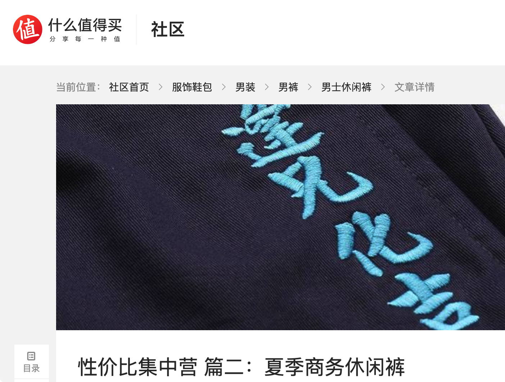
集中营和种族灭绝是非常不经济的手段，这很违背中国人务实的态度。
Concentration camps and genocide are very uneconomic means, which is very much against the pragmatic attitude of the Chinese.
我在称述事实，请不要曲解我对集中营的看法。
I am stating facts, please don't misinterpret my views on concentration camps.
你能想象在新疆这种地方去维持一个关押、灭绝几百万人的集中营需要多少的人力、物力和财力？
人类进行物质生活资料的生产既要同自然界发生关系，人们之间也要发生一定的社会关系，这就构成了生产力和生产关系，二者辩证统一于生产方式。生产力最终决定生产方式的存在、发展和变革；生产关系则直接规定生产力的性质。生产力和生产关系的矛盾运动构成了生产关系一定要适合生产力状况的规律。
The production of material means of life by human beings involves both relations with nature and certain social relations among people, which constitute the productive forces and relations of production, both of which are dialectically unified in the mode of production. Productivity ultimately determines the existence, development and change of the mode of production; the relations of production directly define the nature of productivity. The contradictory movement of productive forces and relations of production constitutes the law that relations of production must be suitable to the condition of productive forces.
Can you imagine the human, material, and financial resources required to maintain a concentration camp that imprisoned and exterminated millions of people in Xinjiang?
为什么人类从奴隶社会走出来？因为人性光辉？美国废除黑奴制度是因为人人平等？中国从西周的奴隶制过渡到秦汉的封建社会，是为了爱？一部分是吧。我觉得另一个主要的原因社会生产力的发展。
Why did mankind emerge from the slave society? Because of the glory of humanity? Did the United States abolish black slavery because everyone was equal? China's transition from slavery in the Western Zhou to feudal society in the Qin and Han dynasties was for love? Part of it is。 I think the other reason social productivity development.
奴隶制的生产效率低下，它跟不上时代的潮流了。Slavery was so inefficient in production that it couldn't keep up with the times.
如BBC记者沙磊(John Sudworth)报道，中国强迫50万人采摘棉花。我们暂且不论强迫劳动的效率有多低，就是维持一群没有奴隶意识的现代人从事奴隶的工作需要多少的人力、物力和财力？采棉花的收益能够产生效益吗？
As the BBC's John Sudworth reports, China forces 500,000 people to pick cotton. Let's put aside how inefficient forced labor is, how much human, material and financial resources are needed to maintain a group of modern people without a sense of slavery to do the work of slaves? Can the proceeds from cotton picking be productive?
我们现在连拉完大便要冲水都做不到。We can't even flush after pooping now.
新疆如何采棉花？新疆的棉花是怎么采收的？机械化的程度有多高？我建议你使用谷歌翻译来阅读以下。
How to pick cotton in Xinjiang? How is cotton harvested in Xinjiang? How mechanized is it? I suggest you use Google Translate to read the following.
新疆北部适合机械化，这是成本最低的方式。目前机械化采棉的比例在90%，很大一部分由新疆生产建设兵团完成。
Northern Xinjiang is suitable for mechanization, which is the lowest cost way. The current proportion of mechanized cotton picking is at 90%, a large part of which is done by the Xinjiang Production and Construction Corps.
新疆南部部分地区不适合机械化，会组织人去采棉花。以前还有采棉专列这种东西，新疆地方组织来自周边省市的人来新疆采棉花。
Parts of southern Xinjiang are not suitable for mechanization, it will organize people to pick cotton. There used to be such things as cotton picking special trains, Xinjiang hires people from neighboring provinces and cities to pick cotton in Xinjiang.
四年前一个来自四川的采棉花的大姐怼记者
Four years ago a sister from Sichuan cotton picking called out the reporter
记者：你最好看着我的镜头说。大姐：看着镜头耽误我时间嘛。记者：就耽误你两三分钟吧。大姐：两三分钟？那时间都是金钱嘛。记者：你来自哪个地方？大姐：我来自四川仁寿。记者：你叫什么名字啊。大姐：我叫“人不知”（笑）。记者：你为什么来新疆摘棉花呀。大姐：因为钱！记者：因为啥？大姐：朝钱看！待在土里面这么辛苦，不为钱为什么呀？记者：有什么想对孩子们说的话？可以通过电视让她们看到。大姐：不用，我自己用电话就行了……Reporter: You better look at my camera and say.Sister: it will delay my time.Reporter: It willjust take you two or three minutes.Sister: two or three minutes? That time is money.Reporter: Where are you from?Sister: I'm from Renshou, Sichuan.Reporter: What's your name?Sister: I am called "people do not know" (laugh).Reporter: Why did you come to Xinjiang to pick cotton ah.Sister: because of money!Reporter: Because what?Sister: look at the money! Staying in the soil is so hard, if not for the money, why ah?Reporter: What do you want to say to the children? You can let them see it on TV.Sister: No need, I can use the phone myself ......
毫无缘由的举动 Unprovoked moves
我不知道西方媒体说中国人实施种族灭绝的原因是什么？因为我很难想出一个合理的理由去物理消灭一个人。(这个观点不影响我支持死刑。死刑的使用对象包括贩毒、贩毒、杀人、叛国、放火、决堤、向水源投毒。)
I don't know what the reason is for the Western media to say that the Chinese are committing genocide. Because I'm having a hard time coming up with a rational reason to physically eliminate a person. (This argument does not affect my support for the death penalty. The death penalty in China is used for drug trafficking, drug dealing, murder, treason, setting fires, breaking dykes, and poisoning water sources.)
汉族人恨维吾尔族？NO! 中国人对少数民族没有这个问题。并且这是一个非常奇怪的问题，问题本身就是在表明立场。我认识回族、土家族、蒙古族、满族和朝鲜族的朋友，民族身份不是我们考虑的一部分。五十六个民族五十六朵花，五十六个兄弟姐妹是一家。我觉得西方作为民族国家的发源地，种族主义的问题似乎一直伴随着西方社会。是不是这种思维限制了西方人思考问题的角度？仿佛一切的不同民族都是对立的？
Han Chinese hate Uyghurs Chinese? NO! And it is a very strange question, the question itself is stating a position. I know Hui, Tujia, Mongolian, Manchu and Korean friends and ethnic identity is not a part of our consideration. Fifty-six ethnic groups and fifty-six flowers, fifty-six brothers and sisters are one family. It seems to me that the issue of racism has always accompanied Western society as the birthplace of the nation-state. Is it possible that this kind of thinking limits the perspective of Westerners in thinking about issues? As if all different nationalities are antagonistic?
对于维吾尔族的人呢，普通中国人可能还有更多的喜爱。因为他们的长相更加符合人们现在的审美，充满异域风情却又无比熟悉。阿凡提是一个关于聪明的维吾尔族大叔的故事。如果一个中国不是与世隔绝或者傻子，那么他一定知道阿凡提大叔，并通过阿凡提大叔的机智、勇敢和善良而喜爱维吾尔族的兄弟姐妹。我很难相信对一个充满敌意的民族是如何在几十年内播放如此积极的内容。
For the Uyghur people then, the average Chinese may have more to love. Because their looks are more in line with people's current aesthetics, exotic yet incredibly familiar. Avanti is a story about a smart Uyghur uncle. If a Chinese is not isolated or stupid, then he must know Uncle Avanti and love his Uyghur brothers and sisters through his wit, bravery and kindness. I find it hard to believe how such positive content can be broadcast over decades if for a hostile people.
想想一下，纳粹德国在电视上播放《聪明善良的犹太人》，你觉得奇怪吗？
Think about it, does it seem odd to you that Nazi Germany showed The Wise and Kind Jews on TV?
请不要曲解我对纳粹的态度，万恶纳粹。 Please don't misinterpret my attitude towards Nazis. Nazis is bad.
所以，宣扬汉族和少数民族矛盾的言论是很荒谬的。当然确实现在有了一些问题，你可以看看文末给的纪录片。看看坏人是如何利用宗教制造问题的。
Therefore, it is absurd to preach that Han and ethnic minorities are in conflict. Of course it's true that there are some problems now, you can see the documentary given at the end of the article. See how the bad guys are using religion to create problems.
还是为了土地？为了石油？新疆是新疆人的新疆，新疆也是中国人的新疆。新疆生产建设兵团在新疆垦荒和开发，包括维吾尔族人民在内的中国人民正在创造幸福。
Or for the land? For the oil? Xinjiang is the Xinjiang of Xinjiang people, and Xinjiang is also the Xinjiang of Chinese people. The Xinjiang Production and Construction Corps is reclaiming and developing the land in Xinjiang, and the Chinese people, including the Uyghur people, are creating happiness.
宗教？Religion?
我不去表达个人观点，我罗列一下数据。I won't go into my personal views, I'll list the data.
中国信仰伊斯兰教的民族有：回族，维吾尔族、哈萨克斯坦族、东乡族、柯尔克孜族、撒拉族、塔吉克族、乌孜别克族、保安族、塔塔尔族，以及包括汉族在内的众多穆斯林（我老家1公里范围内就要一座清真寺，小时候经常去。现在已经好多年没路过了。）。 The ethnic groups that believe in Islam in China are: Hui, Uyghur, Kazakhstan, Dongxiang, Kirgiz, Salar, Tajik, Uzbek, Baoan, Tatar, and many Muslims including Han Chinese (I had to go to a mosque within 1 km of my hometown, and often went there as a child. Now it's been years since I passed by.) .
新疆拥有超过两万做清真寺，但是新疆才2500万人其中一半是汉族。每530个穆斯林就有一座清真寺。
Xinjiang has more than 20,000 mosques, but there are only 25 million people in Xinjiang, half of whom are Han Chinese. There is one mosque for every 530 Muslims.
中国自古一向是世俗国家，但中国宪法保证了信教的自由和不信教的自由。所以我不信教，也没人可以强迫我信教。
我个人不喜欢任何宗教，特别是在新疆这种人口小省浪费很多钱去修寺庙。这些钱应该花在教育、扶贫。正式因为西方媒体的不断造谣、污蔑，致使中国政府在面对新疆问题的时候过分地谨慎，从而导致宗教这种东西在21世纪没有走向毁灭，反而愈发的壮大。
纽约时报去年9月造谣中国拆毁16000座清真寺，当然你去搜索的话一定会搜到一些废墟的图片再配上一个维吾尔族人的照片。不过，请思考一下。
China has always been a secular country since ancient times, but the Chinese constitution guarantees the freedom to believe and the freedom not to believe. So I am not religious and no one can force me to be religious.
Personally, I don't like any religion, especially wasting a lot of money to build temples in a small population province like Xinjiang. The money should be spent on education and poverty alleviation. The Chinese government has been overly cautious in dealing with the Xinjiang issue because of the constant disinformation and slander by the Western media, which has led to the growth of religion in the 21st century rather than its destruction.
The New York Times last September rumored that China had demolished 16,000 mosques, but of course if you search, you will find pictures of the ruins with a picture of a Uighur man. But think about it.
==历史经验和想象力== == historical experience and imagination == 人类的想象力是有限的。The human imagination is limited.
大部分人类无法想象自己知识范围外的事物，就如同皇帝的农具一定是金子做的。西方人回忆了一下自己做过的事情，然后觉得中国人也理所当然会这样做。因为西方媒体说的很多事情都会让中国人觉得莫名其妙：我为什么要那样做？
Most humans cannot imagine things outside their knowledge, just as the emperor's farming tools must have been made of gold. Westerners recall things they have done, and then think it is logical that the Chinese would do the same. Because so many things the Western media say can be baffling to the Chinese: Why would I do that?

比如BCI说中国强迫维吾尔族摘棉花，我会感觉非常的奇怪。For example, I feel very strange when BCI says that China forces Uyghurs to pick cotton.
This is a video from last october, a guy shared his time to collect cutton. 我个人喜欢这种没有经过明显剪辑的视频，它们粗糙但真实。视频的拍摄时间是好几个月之前，所以我更加信任内容。这个小伙子驾驶的机器出了问题，所有机器采集之后还是会有很多棉花散落。他和他的同事需要去采棉花：“我们现在不想开采棉机了，就喜欢拾棉花。拾棉花多开心一斤两块钱。”
This is a video from last october, a guy shared his time to collect cutton. I personally like these videos that are not obviously edited, they are rough but real. The video was shot several months ago, so I trust the content even more. This chap was driving a machine that was having problems and there was still a lot of cotton scattered after all the machine collection. He and his colleague need to go pick cotton: "We don't want to cotton machines now, we like to pick cotton. More pick cotton more happy, a Jin (500g) for two RMB."
中国在新疆有很多军队、警察
警察
中国几乎是非人口小国中警察比例最小的。
Police per 100,000 people:
- Somalia: 43
- Finland: 130
- China: 143
- America: 238
- Taiwan (China): 272
- HongKong (China): 487
- Turkey: 524
上面的数据都不包括辅警。当然，中国有一些辅警，但是他们没有执法权且数量也不是很多。我之前看过各国的警察制度介绍，其中香港和美国都是存在辅警制度。
中国的警察几乎不配枪
在火车站和机场这种尝试你会看到几个武警配枪，其他几乎所有的警察一半都是不配枪的。大城市的警察也逐渐有一些开始配枪。
为什么西方人觉得中国警察多？Why do Westerners think there are more Chinese police?
因为中国的制服全他妈的长一个样子。Because Chinese uniforms all look the same fucking way.
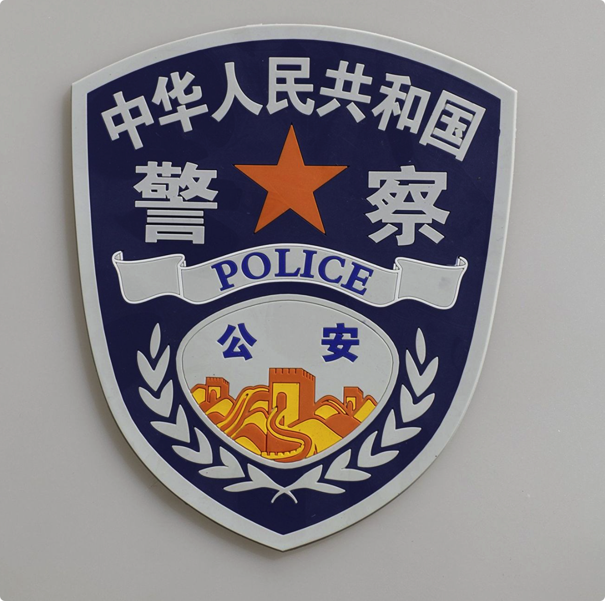
- Traffic and Fee
- Environmental Protection (WTF, a uniform for Environmental Protection?)
- Comprehensive Enforcement (never heard)
- Garden Inspection (WTF is this? Garden?)
- Forestry Bureau
- Urban Management
- Supervisor (quality of road and building, i guess)
- Road Administration
- Surveillance（I donot now what is this, and I do not know what is this for, and I know it is not for surveillance ）
- Inspection
- Medice administration
- Safety inspection
- Culture inspection (WTF)
- Supervision
- can't read
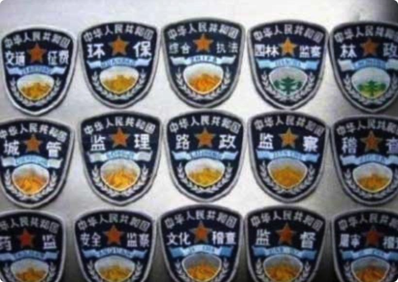
最搞笑的是，看大门的保安的制服也和警察的一模一样
The funniest thing is that the uniforms of the security guards watching the gates are exactly the same as those of the police
中国的保安一般是这个样子的，他们的工作地点一般是工厂的大门，给别人开门；或者在银行维持秩序，大部分时间也负责打扫卫生。
Chinese security guards generally look like this, their workplace is usually the factory gate, opening the door for others; or in the bank to maintain order, most of the time also responsible for cleaning the flor.
如果你60岁退休了没事干，想继续工作但是又没有技能，怎么办？当保安咯，比如我舅舅，现在给别人开大门。
If you are 60 years old and retired and have nothing to do, want to continue to work but no skills, how to do? You can be a security guard, such as my uncle, now he opens the gate for others.
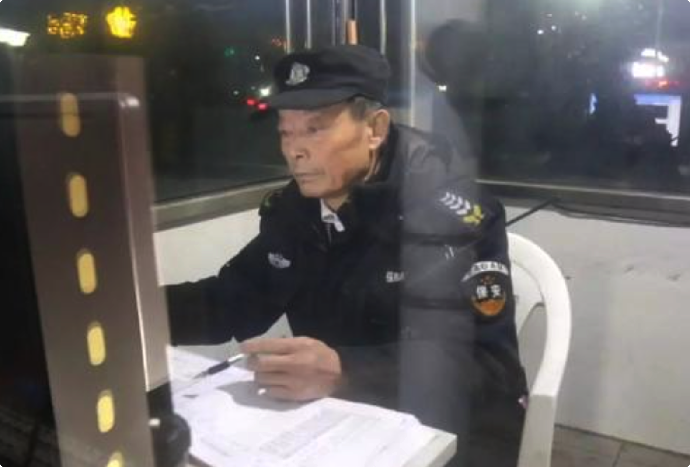
我草！！！！！WTF!!!
我在阿里巴巴上随便搜一下”保安制服“，你们看看是不是很像警察？这就是为什么在中国：
I searched for "security uniforms" on Alibaba, you see if it is very similar to the police? This is why in China.
==Dude, I buy you a "cop" cloth for 4 euro.==
- 我在银行遇到了警察 I met a cop at a bank
- 我在肯德基遇到了警察I met a cop at KFC
- 我在麦当劳遇到了警察I met a cop at McDonald's
- 他妈的我拉坨屎都有警察WTF!! I took a shit and there was a cop
军队
新疆作为中国领土，驻扎多少军队那是中国自己的事情。中国现役部队两百万人，相对于中国广大的国土面积、众多的邻国以及14亿人口，这个不对可以说是非常的迷你。
Per 1000 capita:
- North Korea: 50.4
- Singapore: 8.4
- Taiwan (China): 6.9
- Turkey: 4.4
- Anerica: 4.2
- China: 1.5
如果你稍微了解一下新疆的恐袭局势，你可能有不一样的想法。
恐怖袭击
中国新疆·反恐前沿 Xinjiang, China - Counterterrorism FrontierDocumentary
幕后黑手——“东伊运”与新疆暴恐 Behind the Scenes - "East-Iranian Movement" and Xinjiang Riots
暗流涌动——中国新疆反恐挑战Undercurrents - China's Xinjiang Counterterrorism Challenge
巍巍天山——中国新疆反恐记忆 The majestic Tianshan Mountains - China's Xinjiang anti-terrorism memory
永远被推迟的访问 A visit that is forever postponed
中国外交部发言人华春莹在推特上写道：Chinese Foreign Ministry spokeswoman Hua Chunying tweeted.
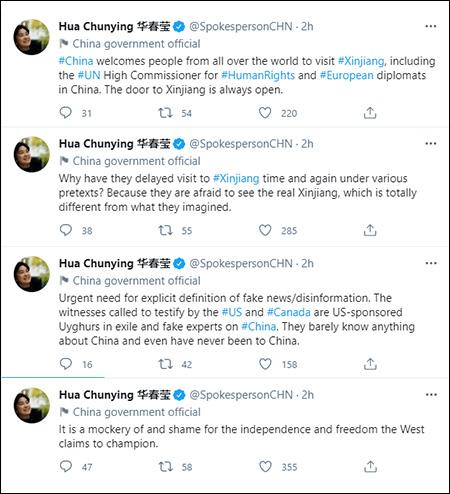
在西方捏造中国"新疆人权问题"后，绝大多数穆斯林国家力挺中国，包括沙特阿拉伯，阿联酋，叙利亚，巴基斯坦，卡塔尔，科威特和巴林等等国家。
这些国家的代表都亲自前往过新疆，赞扬并支持中国在关心新疆维吾尔族人方面的努力。
与此同时，伊朗官方访问了新疆。上合组织秘书长及20余国家驻华使节正在新疆参观访问。
我知道西方推迟访问的接口是中国禁止他们会见某些人（大部分是囚犯）。这样的接口兼职荒谬至极，就如同中国的官员跑到美国之后想要会见Assange，美国是一定会拒绝并借此抹黑中国想要达到某种邪恶的想法。
After the West fabricated the "Xinjiang human rights issue" in China, the vast majority of Muslim countries supported China, including Saudi Arabia, the United Arab Emirates, Syria, Pakistan, Qatar, Kuwait and Bahrain, among others.
Representatives of these countries have personally traveled to Xinjiang to praise and support China's efforts to care for the Uighurs in the region.
Meanwhile, Iranian officials have visited Xinjiang. The Secretary General of the SCO and ambassadors of more than 20 countries in China are visiting Xinjiang.
I understand that the interface for the West to postpone the visit is that China has banned them from meeting certain people (mostly prisoners). Such an interface is absurd in the extreme, just as when Chinese officials come to the US and want to meet with Assange, the US is sure to refuse and use it to smear China for trying to achieve some evil idea.
不一样的衣服Different clothes
你有发现在新疆的维吾尔人和出现在BBC节目中的所谓的维吾尔族人的区别了吗？
Have you noticed the difference between the Uyghurs in Xinjiang and the so-called Uyghurs who appeared on the BBC program?
BBC记者如果真的关心维吾尔族人的人权，至少多去了解他们的文化。至少了解维吾尔族人穿什么、长什么样子。
If the BBC reporter really cares about the human rights of the Uyghurs, at least go and learn more about their culture. At least understand what the Uyghurs wear and look like.
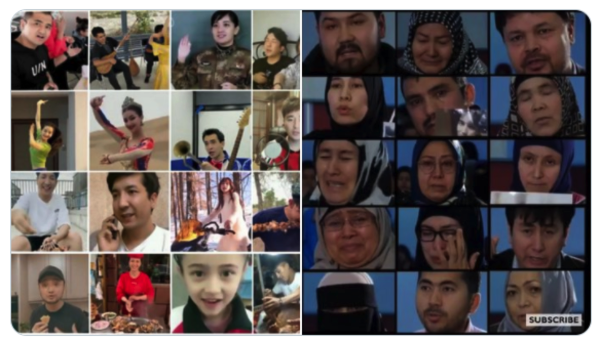
我们的维吾尔族姐妹是不穿黑色的Hijab也不会遮住头发的。最最重要的区别是，他们没有压迫、没有悲伤。
Our Uyghur sisters are not wearing black Hijab nor do they cover their hair. The most important difference is that they have no oppression and no sorrow.


Adrian Zenz 郑国恩
郑国恩，德国人，原名Adrian Zenz，号称是个学者，但其实就是一个极右翼福音派神棍（特朗普的粉丝们应该有一个群体就是福音派吧）。他2006年去剑桥大学读人类学博士，开始研究中国少数民族问题。要想搞好人类学调查至少需要和当地人面对面沟通才能拿到准确的一手资料，但这个家伙靠着看新闻、谷歌一下卫星图像，撑死了翻译翻译当地政府宣传册 ，其余内容全靠脑补。博士毕业以后一直在德国福音派教会讲课（你有兴趣可以了解一下德国福音派教会。）。2013年他发表了他的“大作”，声称发现了“西藏大规模强迫劳动”。这一套东西缺乏科学性，主流德国汉学家评价这太荒谬，完全是一个笑话。2016年之后，特朗普上台强力打压中国。西方发现了郑国恩这个“大宝贝”。《纽约时报》《华盛顿邮报》等西方媒体支持下郑国恩马力全开，写了十多份关于新疆的“报告”，不断重复所谓的“种族灭绝”、“强迫绝育”。至于证据，口述全靠编造，数据全靠推测，关联全无逻辑。2018年他摇身一变成了“新疆问题研究专家”：“I feel very clearly led by God to do this”。这是典型的神棍行为。
Zheng Guoen, a German national formerly known as Adrian Zenz, claims to be an academic, but is really a far-right evangelical theologian (I think there is a group of Trump fans who are evangelicals). He went to Cambridge University in 2006 to do a PhD in anthropology and started studying Chinese minorities. To do good anthropological research one needs at least face-to-face communication with the locals to get accurate first-hand information, but this guy relies on watching the news, Googling satellite images, translating Chinese local government brochures, and making up the rest of the content in his head. Since graduating with his PhD, he has been lecturing at the German Evangelical Church (you can read about the German Evangelical Church if you are interested.). In 2013 he published his "masterpiece" claiming to have discovered "mass forced labor in Tibet". After 2016, Trump came to power to forcefully suppress China. The West discovered Zheng Guoen's "big treasure. With the support of the New York Times, the Washington Post, and other Western media, Zheng wrote more than a dozen "reports" on Xinjiang, constantly repeating the so-called "genocide" and "forced sterilization. ". In 2018, he became an "expert on Xinjiang": "I feel very clearly led by God to do this". This is typical of the behavior of a godly man.
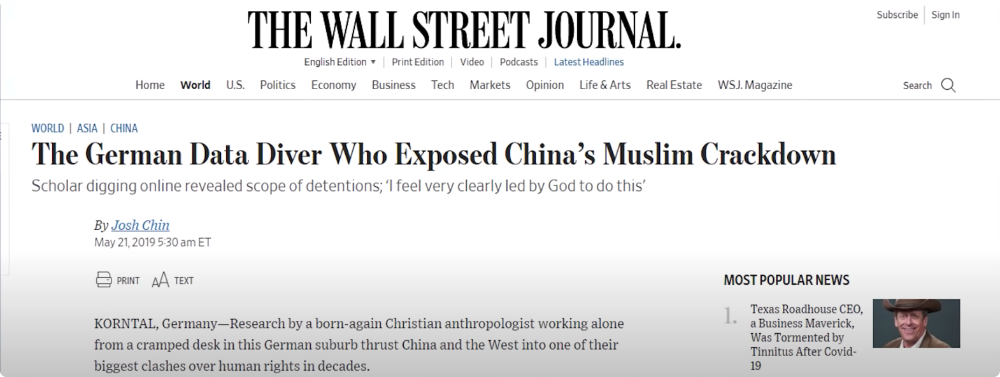
2019年，郑国恩抛弃“独立学者”的身份投奔反华组织“共产主义受害者纪念馆基金会”当了“高级研究员”。
In 2019, Zheng left his status as an "independent scholar" to become a "senior researcher" for the anti-Chinese organization "Memorial Foundation for Victims of Communism".
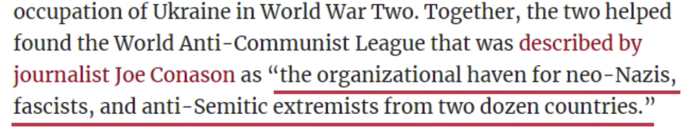

在驳斥郑国恩的研究之前，我介绍一下新疆棉花生产的情况，所谓新疆棉花存在强迫劳动主要针对的是新疆南部地区。2009年，新疆维吾尔自治区原棉产值超过963亿元，占农业产值的四成多，农民纯收入的20%来自于棉花，全省超过一半以上的农民种植棉花。而在南部，80%以上的县市种植棉花，22个深度贫困县都是棉花产地。换句话说，种植棉花是新疆南部经济发展脱贫攻坚的重中之重，棉花的生产种植直接关系到新疆南部农民的生活（这是另外一个西方想要搞乱中国的方式）。
Before refuting Zheng Guoen's study, I introduce the situation of cotton production in Xinjiang. the so-called existence of forced labor for cotton in Xinjiang is mainly for the southern region of Xinjiang. in 2009, the raw cotton output value of Xinjiang Uygur Autonomous Region exceeded 96.3 billion yuan, accounting for more than 40% of agricultural output, 20% of farmers' net income comes from cotton, and more than half of the province's farmers grow cotton. And in the south, more than 80% of the counties and cities grow cotton, 22 deep poverty-stricken counties are cotton production areas. In other words, growing cotton is the top priority for economic development in southern Xinjiang to fight poverty, and the production and cultivation of cotton is directly related to the livelihood of farmers in southern Xinjiang (this is another way the West wants to mess with China).
新疆南部棉花产业长期面临两大矛盾：
The cotton industry in southern Xinjiang has long faced two major contradictions.
第一是棉花采收难，The first is the difficulty of harvesting cotton.
第二是在当地招不到工人，没有办法对棉花进行加工处理。The second is that there is no way to process the cotton as we cannot recruit workers locally.
第一个矛盾主要的问题是新疆南部地区的土地碎片化难以机械化。2020年新疆棉花机械采集率达到69.83%。新疆南部地区棉花种植的面积占新疆全省种植面积的七成，但是机械化采集率却只有34.7%，而新疆北部的机械化采集率已经达到了95%以上。每年依然会有大量的人员去手动采摘棉花。90年代中期以来，来自河南，四川，云南，甘肃等中西部农村的劳动力会乘坐专门的列车前往新疆采集棉花，一度有60多万人。
The first contradiction is the main problem of land fragmentation in southern Xinjiang is difficult to mechanize. 2020 Xinjiang cotton mechanical collection rate reached 69.83%. The area of cotton planted in southern Xinjiang accounts for 70% of the planted area in Xinjiang province, but the mechanized collection rate is only 34.7%, while the mechanized collection rate in northern Xinjiang has reached more than 95%. A large number of people still go to pick cotton manually every year, and since the mid-1990s, laborers from rural areas in central and western China, such as Henan, Sichuan, Yunnan, and Gansu, would travel to Xinjiang on special trains to collect cotton, at one point numbering more than 600,000 people.
第二个矛盾是目前新疆南部还有不少人收入比较低，且没有技能。近年来国家帮助脱贫，当起了企业和当地居民的介绍人，招募当地群众采摘棉花。采摘棉花虽然辛苦，但是收入是真的非常可观，一个月可以挣5000元左右。这个政策提高了当地人的就业比率，改善了当地居民的生活条件，帮助贫困户脱贫，还能促进棉花产业发展，一举多得。
The second paradox is that there are still many people in southern Xinjiang who have relatively low incomes and no skills. In recent years the state has helped to fight poverty by acting as an introduction to businesses and local residents, recruiting local people to pick cotton. Although picking cotton is hard work, but the income is really very substantial, a month can earn about 5,000 yuan. This policy has improved the employment rate of local people, improved the living conditions of local residents, help poor households out of poverty, but also to promote the development of the cotton industry, a multi-benefit.
在中国读过书的人都有类似的经历，当地不少小学和初中会组织户外活动。比如我小时是种树和除草。我估计在新疆就是采棉花或者摘西红柿。这种户外课其实就是让学生去玩，体验生活。大家都知道学生根本干不了什么。但郑国恩并不这么想，介绍工人采摘棉花变成了新疆有使用非自愿劳动力采集棉花的历史
Anyone who has studied in China has a similar experience. Many local elementary and junior high schools organize outdoor activities. For example, when I was a kid it was planting trees and weeding. I guess in Xinjiang it was cotton picking or tomato picking. This outdoor class is really about getting students to play and experience life. Everyone knows students can't do anything at all. But Zheng Guen doesn't think so, and introducing workers to picking cotton turns out to have a history of using involuntary labor to collect cotton in Xinjiang
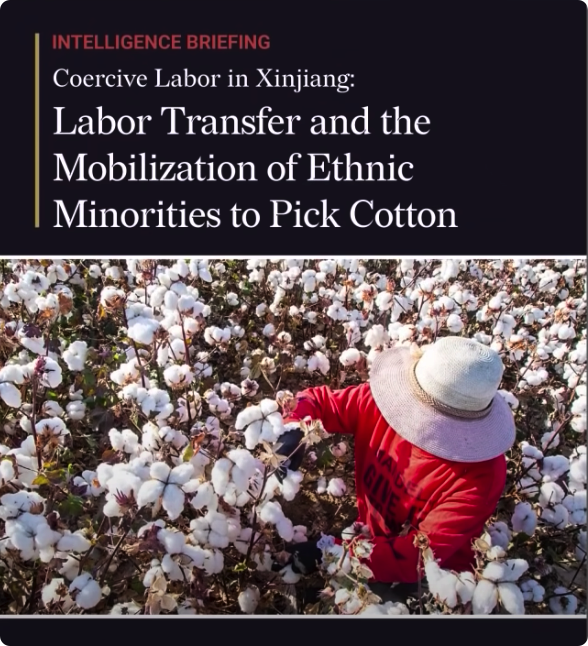
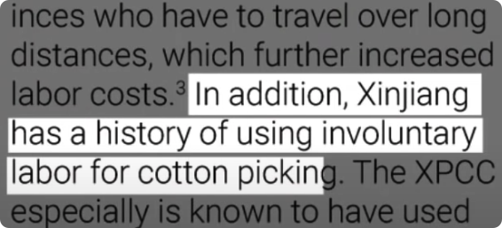
组织学生体验生活，更是直接被叫做多年来强迫数十万中学生采集棉花。
Organizing students to experience life is more directly called for years of forced hundreds of thousands of secondary school students to collect cotton.
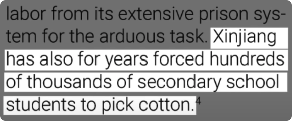
政府帮忙构建市场流通环节，郑国恩解读为新疆不断扩大推动侵入式社会管控机制和，和胁迫性劳动转移机制。
The government helped build the market circulation link, which Zheng Guoen interpreted as Xinjiang's expanding push for intrusive social control mechanisms and, and coercive labor transfer machines.
my english can not translate this shit correctly maybe.
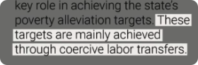
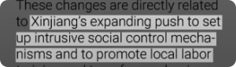
国家为了扶贫要帮助贫困户联系企业，到了郑国恩的嘴里就变成了因为集体生活更方便监视控制。
The country wants to help poor households to contact enterprises in order to help the poor, but in Zheng Guen's mouth it becomes more convenient to monitor and control because of collective living.
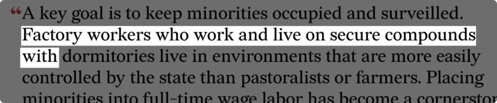
中国九年义务教育巩固率达到94.8%而剩下的5.2%，里面主要就分布在新疆南部地区。长期以来，许多少数民族贫困劳动力，受限于地理位置，无法熟练使用国家通用语言和文字，也缺乏职业技能。2015年的一份抽样抽样调查显示，在农村常住居民的户主里面，四成人只上过小学，不到一半的人上过初中。这还是户主的文化程度，整体的受教育水平要更低。国家多次组织职业培训，驻村干部和村民同吃同住同学习同劳动。有的村民嫌累不愿意，有的贫困户五担心脱贫之后不能够享受到国家的优惠政策，不配合脱贫工作。驻村干部还需要帮忙做思想工作，郑国恩，看到这些如获至宝。
China's nine-year compulsory education consolidation rate reached 94.8% while the remaining 5.2% is mainly located in the southern Xinjiang region. For a long time, many poor ethnic minority laborers, limited by their geographical location, are unable to use the common national language and script proficiently, and lack vocational skills. a sample survey in 2015 showed that among the heads of rural households, 40 percent had only attended elementary school, and less than half had attended junior high school. This is still the literacy level of household heads, and the overall level of education is much lower. The state has organized vocational training for many times, and the cadres in the village eat, live, study and work with the villagers. Some villagers are too tired to be willing, and some poor households are worried that they will not be able to enjoy the preferential policies of the state after getting out of poverty, so they do not cooperate with the work of getting out of poverty. The village cadres also need to help do ideological work, Zheng Guen, see these like a treasure.
扶贫干部去给贫困户做思想工作，那就是侵入性政治灌输。
When poverty alleviation cadres go to do ideological work for poor households, that is intrusive political indoctrination.
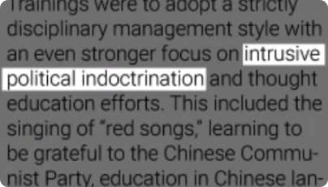
驻村干部组织职业培训，那就是强制性军事化灌输
The village cadres organize vocational training, that is mandatory military indoctrination
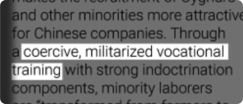
为了提高贫困户职业技能，政府还积极联系纺织企业帮助贫困户就业，还包培训。郑国恩加工成政府通过高度灌输性，强制性，军事化的职业培训，把少数民族劳动力从农民转变成产业工人。
In order to improve the vocational skills of poor households, the government also actively contacts textile companies to help poor households find employment and also provides training. Zheng Guo En processed into the government through highly indoctrinated, mandatory, and militarized vocational training to transform ethnic minority laborers from farmers to industrial workers.
政府不仅是介绍工作，有的贫困户担心出去采棉花后，家里老人孩子没有人照顾，政府也帮忙照顾，如果孩子还比较小，就优先在本县或者本村安排工作就业。郑国恩张口就来：
The government is not only the introduction of work, some poor households are worried about going out to pick cotton, the family elderly children have no one to take care of, the government also help take care of, if the children are still relatively small, the priority in the county or the village to arrange work employment. Zheng Guen opened his mouth:
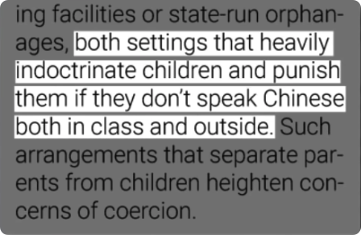
他完全是根据他自己的想象，明摆着歪曲原意。
He is completely based on his own imagination and is clearly distorting the original meaning.
这个郑国恩声称找到了新疆强迫劳动的证据，证据就是他看到的新闻。他看到政府说有50万人转移就业，那就是有50万强制劳工。他看到学校组织课外活动，那就是强迫使用非自愿劳动力。政府帮忙介绍工作，那就是侵入式社会管控。村民到外地打工，那就是政府强迫人民和家人骨肉分离。就这样一篇异想天开的所谓报告，全程靠自己想象，却让西方的一些势力和西方的普通民众如获至宝，欧美媒体听风就是雨，纷纷指责中国强制劳工。
Zheng Guon claims to have found evidence of forced labor in Xinjiang, and the evidence is the news he saw. He saw the government say that 500,000 people were transferred to jobs, that's 500,000 forced laborers. He sees schools organizing extracurricular activities, that's forced use of involuntary labor. The government helps to introduce jobs, that is intrusive social control. When villagers go to work abroad, that is the government forcing people to separate from their families. Such a whimsical report, which is based on one's own imagination, is a treasure for some Western powers and ordinary people in the West, and the media in Europe and the United States are accusing China of forced labor.
2018年郑国恩在“詹姆士顿基金会”上发表了一篇报告预估新疆再教育营关押的维吾尔人总数在10万至100万，而他的依据是来自中国政府的招标文件和预算。而更神奇的是包括联合国专家在内的很多人都使用100万这个数字。
In 2018, Zheng Guen published a report on the Jameson Foundation estimating the total number of Uighurs in Xinjiang re-education camps to be between 100,000 and 1 million, based on tender documents and budgets from the Chinese government. What is even more amazing is that many people, including UN experts, use the figure of one million.
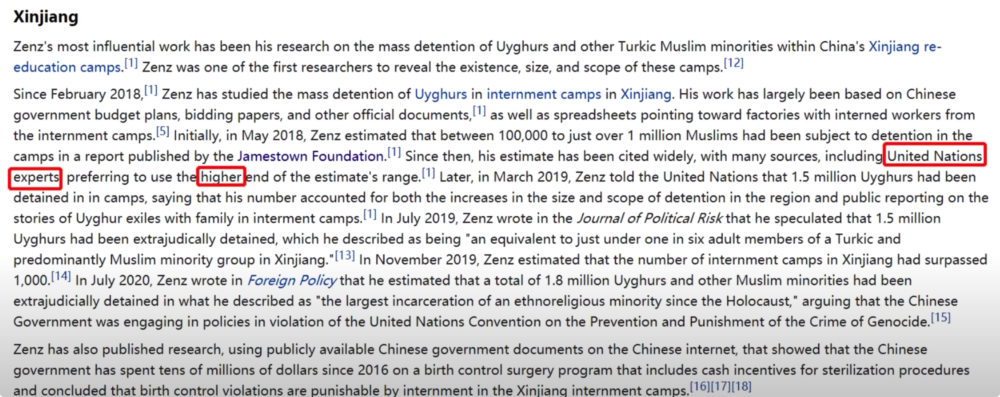
2019年，郑国恩在联合国座谈会上又将这一数字提升至150万。他自己形容：这几乎是新疆少数民族成年人口的六分之一。随即在7月五日在Twitter上发表名为《中国在新疆开展亲子分离运动证据》的文章。
In 2019, Zheng Guoen raised that number again to 1.5 million at a UN symposium. He described it himself: this is almost one-sixth of the adult population of Xinjiang's ethnic minorities. An article titled "Evidence of China's Parent-Child Separation Campaign in Xinjiang" was immediately published on Twitter on July 5.
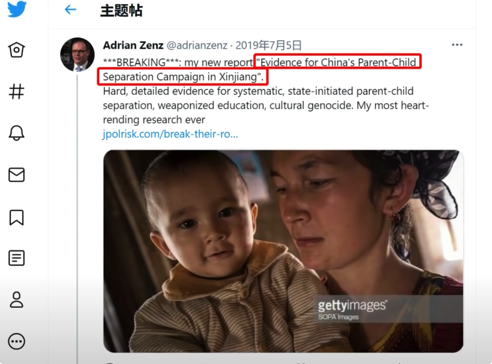
这是一遍几万字的文章，通过很多间接的统计数字和自己的臆测给人一种证据确凿的假象。2019年底他又大胆预估再教育营超过1000个。2020年他在《Foreign Policy》上发表的文章又将关押人数提升至150万。
This is an article of tens of thousands of words that gives the illusion of solid evidence through many indirect statistics and his own speculations. at the end of 2019 he boldly predicts more than 1,000 re-education camps. in 2020 his article in Foreign Policy raises the number of incarcerations to 1.5 million.
造谣是一门艺术，如果想要达到谎言说千遍就成真的目的，那么切忌过于夸张。我前几天听到莫桑比克这个国家，好像因为恐怖袭击死了几十个人。在一个贫穷、遥远的非洲国家死了几十个人都能让一个在德国的中国人知道。可是有人声称中国在种族灭绝，却从来没有任何的实际证据，永远是把同一个新闻反复的引用，不断的重复着同样的话。我想郑国恩如果好好学习数学，对数字敏感一点的话，他应该把这个数字弄小一点。180人有组织性的屠杀在当今世界绝对足够震撼，且令人信服。六个维吾尔人中就有一个被关押、性侵或者灭绝，你想象一个这个人际社交网络。同时，你还需要让新疆一半人口的汉族成为冷血、无情的动物。因为他们居然对大屠杀无动于衷。
Disinformation is an art, and if you want to achieve the goal of telling a lie a thousand times to make it true, then do not exaggerate too much. I heard the other day that dozens of people died in Mozambique because of a terrorist attack. Dozens of people died in a poor, distant African country that a Chinese man in Germany could have known about. Yet someone claims that China is committing genocide without ever having any actual evidence, always quoting the same news over and over again, repeating the same words over and over again. I think if Zheng Guoen had studied math properly and was more sensitive to numbers, he would have made that number smaller. 180 people in an organized massacre is definitely shocking and convincing enough in today's world. One in six Uyghurs are imprisoned, sexually assaulted or exterminated, and you try to imagine how big a social network is. At the same time, you need to make half the population of Xinjiang, the Han Chinese, cold-blooded, heartless creatures. Because they were actually indifferent to the massacre.
第二师二十五团在新疆为村民提供免费医疗检查被郑国恩写成人口控制。
The 25th Regiment of the 2nd Division provides free medical checkups for villagers in Xinjiang was written up as population control by Zheng Guoen.
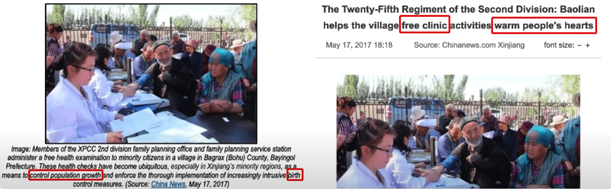
这种活动在中国真的太普遍了。免费检测身体？谁不喜欢？
This kind of activity is really too common in China.Free body checking? Who wouldn't like that?
我估计你说大便免费领取，都有人来。 I reckon if you say poop for free, people will come too.

Why try so hard?
美国陆军上校劳伦斯 威尔斯克森（col. Lawrence Wilkerson）在Ron Paul研究所的一段演讲，其中他提到美国入侵阿富汗的目是围堵中国和祸乱新疆：
A speech by U.S. Army Col. Lawrence Wilkerson at the Ron Paul Institute, in which he referred to the U.S. invasion of Afghanistan as an attempt to encircle China and destabilize Xinjiang.
- 'What Is The Empire's Strategy?' - Col Lawrence Wilkerson Speech At RPI Media & War Conference - YouTube
- American/Canadian Propaganda - a Xinjiang "Genocide" Panel - YouTube
中国太大了！ China is too big
Video 0:30 美国总统出访澳大利亚前批评中国的发展模式 - YouTube
You know if you talk to chinese leaders i think they will acknowledge immediately that if over a billion Chinese citizens have the same living patterns as australians and americans do right low then all of us are in for a very miserable time the planet just cant sustain it
so they understand that they 've got to make a decision about a new model that is more sustainable that allows them to pursue the economic growth that they ' re pursuing while at the same time dealing with these environmental consequences
第一段奥巴马在描述事实，说如果中国人的生活水平与美国和澳大利亚的水平一样的话，地球会受不了的。
In the first paragraph Obama is describing the facts, saying that if the Chinese had the same standard of living as the US and Australia, the planet would not be able to stand it.
第二段就有问题了，奥巴马接着说，于是中国要走可持续发展之路。
The second paragraph is problematic, Obama goes on to say, so China is going to go down the road of sustainable development.
所有因为你中国过好日子就会破坏地球，我们所有人就要完蛋，所有你中国要走持续发展道路。这是地球的问题，为什么变成了中国要干嘛干嘛？为什么不是美国人和澳洲人改变一下自己浪费的生活方式？
All because you China to live a good life will destroy the earth, all of us will be finished, all you China has to take the path of sustainable development. This is the problem of the planet, why has it become what China needs to do what? Why don't the Americans and Australians change their wasteful lifestyles?
你理解这两种方式的区别了吗？如果你认为我没理解奥巴马的意思，请不要来向我解释奥巴马的本意是什么。
Do you understand the difference between the two approaches? If you think I'm missing Obama's point, please don't come to me and explain to me what Obama's intent was.
鸡只剩一只了，我要吃一只鸡，所以你米饭就可以了。
There's only one chicken left, and I'm going to have one chicken, so rice for you is just fine. So why not share a chicken
我难以想象习近平主席说：”如果越南人过上和我们中国人一样的生活，那么我们就完蛋了。所以我们不阻止越南发展，但是越南需要走可持续道路。“
I can hardly imagine President Xi Jinping saying, "If the Vietnamese live the same life as us Chinese, then we are finished. So we don't stop Vietnam from developing, but Vietnam needs to follow a sustainable path. "
习近平：人类命运共同体（a Community of Shared Future for Mankind）旨在追求本国利益时兼顾他国合理关切，在谋求本国发展中促进各国共同发展
习近平: A Community of Shared Future for Mankind aims to take into account the legitimate concerns of other countries in the pursuit of national interests, and to promote the common development of all countries in the pursuit of national development.
Gain from history
以古为鉴，可知兴替 The history mirrors both thriving and calamity. 宋代欧阳修编写的新唐书中记录了唐朝皇帝李世民的一段话。
The New Book of Tang written by Ouyang Xiu in the Song Dynasty recorded a passage from Li Shimin, the emperor of the Tang Dynasty.
以铜为鉴，可正衣冠；以古为鉴，可知兴替；以人为鉴，可明得失。朕尝保此三鉴，内防己过。今魏徵逝，一鉴亡矣。 Taking copper (Ancient China used polished copper as mirror) as a guide, people can correct clothing; The history mirrors both thriving and calamity.; Taking people as a guide, people can understand the gains and losses. I have tried to keep these three forensics to prevent my own fault. Now Wei Zheng died, a forensic dead.
中国作为一个国家拥有足够久的历史，去尝试所有可能错误。
China as a country has a long enough history to try all possible mistakes. 中国作为一个特别喜欢撰写史书的国家，也记录了许多荒诞的历史。 China, as a country that is particularly fond of writing history books, has also recorded many absurd histories.
如果将一个中国看做一个寿命足够长、记忆力足够强的个体，那么很多现实发生的困境或许在历史故事中都能找到类似的情形。
If one looks at a China as an individual with a long enough life span and a strong enough memory, then many of the dilemmas that occurred in reality might be found in historical stories in similar situations.
也许每一个问题的解决方案会不一样，但是有监督的机器学习可能相比无监督的机器学习更简单一点。
Perhaps the solution will be different for each problem, but supervised machine learning may be a little easier compared to unsupervised machine learning.
指鹿为马 Refer to the deer as the horse
西汉司马迁写的《史记》中记录了关于秦二世的事情，这里我不讨论秦二世的昏庸无道和残忍。
The "Historical Records" written by Sima Qian in the Western Han Dynasty recorded things about Qin II, and here I will not discuss the dim-wittedness and cruelty of Qin II.
赵高想要叛乱（篡夺秦朝的政权），恐怕各位大臣不听从他，就先设下圈套设法试探。于是带来一只鹿献给二世，说：“这是一匹马。”二世笑着说：“丞相错了吧？您把鹿说成是马。”问身边的大臣，左右大臣有的沉默，有的故意迎合赵高说是马，有的说是鹿，赵高就在暗中假借法律中伤（或陷害）那些说是鹿的人。以后，大臣们都畏惧赵高。
Zhao Gao wanted to rebel (usurp the power of Qin dynasty), and fearing that the ministers would not listen to him, he first set up a trap to try to test it. So he brought a deer and offered it to the Second Emperor, saying, "This is a horse." The Second Emperor laughed and said, "The prime minister is wrong, isn't he? You have described the deer as a horse." When he asked the ministers around him, some of them were silent, some deliberately pandered to Zhao Gao by saying it was a horse, and some said it was a deer. Zhao Gao then slandered (or framed) those who said it was a deer under the pretense of law in secret. Later, the ministers feared Zhao Gao.
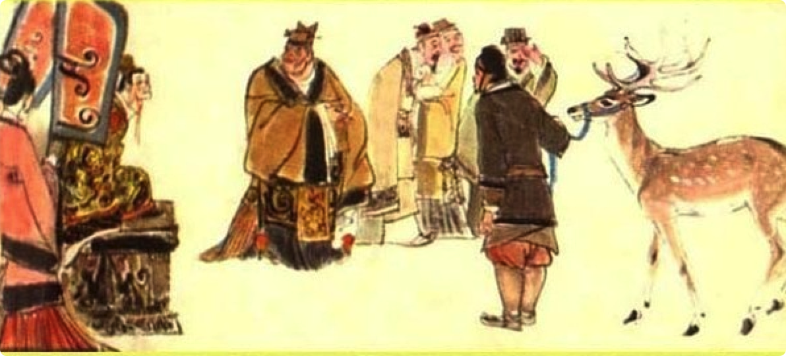
两千多年过去了，指鹿为马的故事是不是又发生了？
After more than two thousand years, did the story of refering to the deer as the horse happen again?
烽火戏诸侯 Fire Beacon to tease vassals
故事是非常荒诞的，以至于都不想真的。
The story is so absurd that it doesn't even want to be true.
烽火戏诸侯，指西周末年的历史事件。周幽王为博褒姒（bāo sì）一笑，点燃了烽火台，戏弄了诸侯。褒姒看了果然哈哈大笑。幽王很高兴，因而又多次点燃烽火。后来诸侯们都不相信，也就渐渐不来了。后来犬戎攻破镐京，杀死幽王。后来幽王的儿子周平王东迁，开始了东周时期。
Beacon fire teases vassals, referring to the historical event in the late Western Zhou Dynasty. King You of Zhou lit a beacon fire to tease the lords in order to get a laugh from Bao Si (bāo sì). Baosi looked at it and laughed out loud. King You was so happy that he lit the beacon again several times. Later, the vassals did not believe in it and gradually stopped. Later, QuanRong broke through the capital of Hao and killed King You. Later King You's son, King Ping of Zhou, moved to the east and started the Eastern Zhou period.
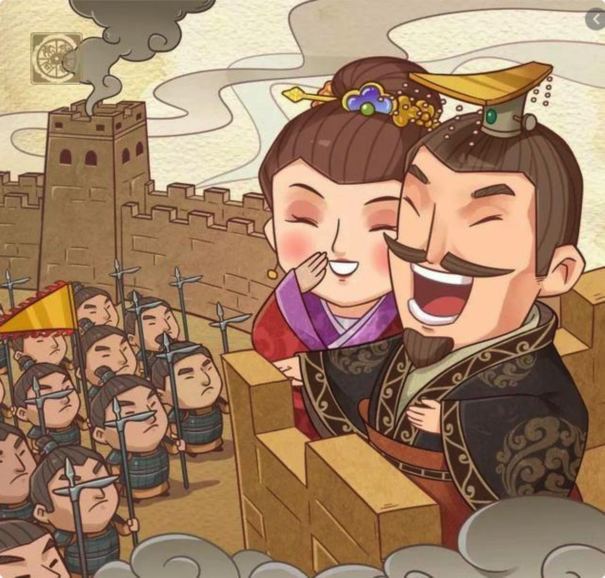
一次的虚假消息或许能够让人们相信，但是谎言千遍是否真的能成为“真相”？
One time false news may be able to make people believe, but can a lie a thousand times really become the "truth"?
西方媒体一次又一次的点燃”烽火“，我不知道何时犬戎何时来。但是我知道犬戎有一点真的会来的。
Time and again, the Western media has lit the "beacon".
I don't know when QuanRong will come. But I do know that a little bit of QuanRong will really come.
你的投降不被接受 Your surrender is not accepted
在一个相对小的圈子里，美国被比喻为明朝的目的是为了将中国比喻为建州（清朝发源地），其核心思想是为了说明当今中国在国际社会中的处境：中国的投降不被接受，也没人能够接受的起。
In a relatively small circle, the United States is compared to the Ming Dynasty for the purpose of comparing China to Jianzhou (the birthplace of the Qing Dynasty), with the central idea being to illustrate the situation of China in the international community today: China's surrender was not accepted and no one could afford to accept it.
正如建州无论如何努力挖人参都成为不了明朝体系的正式成员（因为他们挖旗参同明朝交易），中国无论如何努力生产袜子也无法成为美国体系的正式成员。
Just as Jianzhou could not become a full member of the Ming system no matter how hard they dug ginseng (they dug flag ginseng to trade with the Ming), China cannot become a full member of the American system no matter how hard they produce socks.
当我们谈论环境保护，社会制度或者腐败问题的时候，我们至少还都处于一个相对平等的地位。但是当西方开始造谣中国“种族灭绝”的时候，这意味着在中西对抗的游戏中已经没有退让的余地了。因为中国一旦输掉游戏，那么就彻底地背负“种族灭绝”的罪名了，就成了恶魔。即使所有人知道这是假的。就如同现在如何鞭尸苏联也没人管，因为苏联死了，随便说它做了什么也没人反对。
When we talk about environmental protection, social systems or corruption, we are all at least on a relatively equal footing. The Chinese and even the Chinese government can accept this to a certain extent, because to a certain extent this is the reality. But when the West started to make rumors about China's "genocide," it meant that there was no room for compromise in the game of East versus West. The Chinese understand very well that if China loses the game, then it will be completely guilty of "genocide" and will be the devil. Even if everyone knows it's not true. Just as no one cares how the Soviet Union is flogged now, because the Soviet Union is dead and no one objects to whatever it says it has done. This is why the Chinese people are so disgusted by such rumors.
==背后是万丈悬崖，中国退无可退。==
==Behind it is a precipice from which China cannot retreat.==
明朝经济发达，崇祯皇帝却苦苦哀求大臣给国家军队捐一点点钱
The economy of the Ming Dynasty is well developed, but Chongzhen Emperor painstakingly begged the minister to donate a little money to the national army
中国本身不是产银国，由于地理大发现，南美的白银由于贸易源源不断送到中国，换取丝绸茶叶瓷器。日本的高产银矿也同样如此。现在推测，明末流入中国的白银有9亿两。看似美好的事，但其实危机四伏，本质就是分配不均。
China itself was not a silver producing country, due to the great geographical discoveries, silver from South America was sent to China in a steady stream due to trade in exchange for silk tea and porcelain. The same was true of Japan's highly productive silver mines. It is now speculated that 900 million taels of silver flowed into China at the end of the Ming Dynasty. What seems to be a beautiful thing, but is actually a crisis, the essence is the uneven distribution.
崇祯年间政府财政收入300万两白银，工商业税款只有10%不到，绝大部分的农业税也收不到大户头上。
Chongzhen government revenue of 3 million taels of silver, industry and commerce taxes are less than 10%, and the vast majority of agricultural taxes are not collected from large households.
9亿两白银跑哪去了？为什么换不了农民的口粮，边军的军饷，哪怕是皇帝的奢靡生活？答案就是，除了埋在江南富翁的自家院子里，柳如是们（妓女）的一晚可值十万两？
Where did the 900 million taels of silver go? Why can not change the rations of farmers, the military pay of the border troops, even the emperor's extravagant life? The answer is that, except for being buried in the yards of the rich people in Jiangnan（my hometown area）, the night of Liu Ruyi (prostitutes) is worth 100,000 taels?
1644年，明朝最后一个崇祯皇帝在紫禁城后的小山上吊自尽（Daniel和我曾经去过那个小山）。京城里的豪门被农民军夹棍拷打吐钱，其中皇后周家，给国家捐款3000两，被农民军拷打后，吐出了300万两。 In 1644, the last Chongzhen Emperor of the Ming Dynasty hanged himself on the hill behind the Forbidden City (Daniel and I had been to that hill). The gentry in the capital were tortured and spat out money by the peasant army with clamping sticks, including the Empress Zhou's family, who donated 3,000 taels to the state and spat out 3 million taels after being tortured by the peasant army.
当初崇祯苦苦哀求，倘若家财万贯的贵族稍稍多捐一点点，明朝也不至于弹尽粮绝。最后所有人和他们的万贯家财都陪着明朝一起覆灭。
When Chongzhen begged, if the nobles with a lot of money donated a little more, the Ming dynasty would not run out of food/army. In the end, all of them and their fortunes were destroyed along with the Ming Dynasty.
美国依然强大，科技依然发达，只是我仿佛看到大明的影子。正如在东北挖人参的满族人，中国人在做袜子。
The United States is still strong, technology is still developed, only I seem to see the shadow of the Great Ming Dynasty. Just like the Manchus digging for ginseng in the Northeast, the Chinese are making socks.
==一个残酷的现实是，所有人都逃不过历史的重复，包括中国人，即使我们知道我们在走向灭亡却又无动无衷。==
==A harsh reality is that no one can escape the repetition of history, including the Chinese, even though we know we are heading for extinction and do nothing about it.==
大明朝泱泱帝国亡于党争 The great empire of the Ming Dynasty died because of party disputes
这个话题太大了，我不想展开。而且明朝的历史相对来说比较的压抑，我了解不多。如果你想了解或者娱乐一下，就看Ming Dynasty 1566 (大明王朝1566). Ep 20/46 - English Captions and Annotations - YouTube
This topic is too big for me to expand. And the history of the Ming Dynasty is relatively depressing and I don't know much about it. If you want to understand or be entertained, just watch the TV.
这个话题的目的不是来证明中国制度多有优越，但是我们必须有用接受不同制度的能力和态度。
The purpose of this topic is not to prove how superior the Chinese system is, but we must have the ability and attitude to accept different systems.
社会上不同个人的欲望、利益、观念是极为纷繁复杂的，而且不同个人的欲望、利益、观念显然会相互冲突。在历代政治哲学家看来，这些冲突在平时会给社会带来混乱和纷争、降低政治运转效率，甚至在特定时刻会演化成血腥暴力的战乱。面对这种纷争，自柏拉图的《理想国》以降，不少最顶级的政治哲学家都认为这些分歧的欲望和观念是非常有害的东西，而政治的目标之一就是和这些欲望作斗争，比如柏拉图认为这些欲望的虚假的，不应该成为政治活动和立法的依据；比如霍布斯认为可以以国家暴力压制分歧(我觉得中国共产党的功能)；比如卢梭认为适当的教育和适当的政治制度可以让人知道人之为人真正想要的东西，而不是沦陷于随着文明发展所产生的无限欲望。
The desires, interests, and ideas of different individuals in society are extremely diverse and complex, and the desires, interests, and ideas of different individuals can obviously conflict with each other. In the view of political philosophers, these conflicts can bring chaos and strife to society in normal times, reduce the efficiency of political operation, and even evolve into bloody and violent warfare at certain moments. In the face of such strife, many of the top political philosophers since Plato's Ideal State have considered these divergent desires and ideas to be very harmful things, and one of the goals of politics is to fight against these desires, such as Plato's belief that the falsity of these desires should not be the basis for political activities and legislation; such as Hobbes' belief that differences can be suppressed by state violence (I think function of the Chinese Communist Party); for example, Rousseau's belief that proper education and a proper political system would allow people to know what they really want as human beings, rather than being reduced to the infinite desires that arise as civilization develops.
作者：姜源 链接：https://www.zhihu.com/question/325319669/answer/1006152602 来源：知乎 著作权归作者所有。商业转载请联系作者获得授权，非商业转载请注明出处。
德国记者坦言：部分西方驻外记者实为情报间谍_哔哩哔哩 (゜-゜)つロ 干杯~-bilibili
German journalist confesses: some Western journalists abroad are actually intelligence spies
Udo Ulfkotte was dead due to heart attack.
我不了解Udo Ulfkotte，我只是偶然看到他自己爆料自己被收买。我看到他时是有一点点惊讶的，因为他还活着。事实是他已经因心脏病去世了。
我讲一讲中日韩的自贸区协定来解释一下我为什么一开始惊讶Udo Ulfkotte或者。
早在2012年中日就签署了货币互换协议，但是在当年的9月10日，极力推动《中日货币互换协议》的日本金融大臣松下忠洋，突然在家中上吊自杀，原因是70多岁的他怕自己的桃色新闻败露。我希望我70多岁的时候也能有桃色新闻。6天后，与松下忠洋一起推动中日协议的日本新任驻华大使西宫伸一，在自己家附近突然倒地昏迷，不治身亡，死亡原因不明。2012年8月15日，香港保钓船“启丰二号”成功抵达钓鱼岛，5名“保钓义士”通过游泳的方式登上钓鱼岛宣誓主权。然而发动保钓行动的所谓“义士”，比如罗堪就、梁国雄、曾健成、古思尧、杨匤等人，无一不是港独的急先锋，而香港保钓协会背后的金主正是CIA和臭名昭著的美国国家民主基金会。受钓鱼岛争端影响，中日两国之间剑拔弩张，《中日货币互换协议》被迫在2013年作废。真是无比可笑，一群中国的分裂分子居然为中国争取领土，不奇怪吗？
如果《中日货币互换协议》的价值被正确理解，那么所有的事情都合情合理。你理解货币互换的意义吗？
Back in 2012, China and Japan signed a currency Exchange agreement, but on September 10 of that year, Japanese Finance Minister Tadayo Matsushita, who was pushing hard for the Sino-Japanese Currency Exchange Agreement, suddenly hanged himself at his home because he was in his 70s and was afraid that news of his incestuous relationship would be revealed. Six days later, the new Japanese ambassador to China, Shin'ichi Nishinomiya, who was pushing the Sino-Japanese agreement with Tadayo Matsushita, suddenly fell into a coma near his home and died of unknown causes. On August 15, 2012, the Hong Kong fishing boat "Kai Fung II" successfully arrived at the Diaoyu Islands, and five "Island protection volunteers" swam to the islands to swear their sovereignty. However, the so-called "volunteers" who launched the action, such as Lo Kam-yau, Leung Kwok-hung, Tsang Kin-shing, Koo Sze Yiu and Yeung Hong, are all vanguards of Hong Kong's independence, and the financial backers of the Hong Kong Angling Association are the CIA and the infamous National Endowment for Democracy of the United States. As a result of the Diaoyu Islands dispute, swords were drawn between China and Japan, and the Sino-Japanese Currency Exchange Agreement was forced to be scrapped in 2013. It is beyond ridiculous, isn't it strange that a group of Chinese separatists would fight for China's territory?
If the value of the Sino-Japanese Currency Exchange Agreement is properly comprehended, then everything makes sense. Do you understand the significance of the currency exchange.
BBC的故事
一个叫Tursunay Ziawudun的维吾尔族女人。她在BBC有三个版本的故事：
- 在第一个故事中她说她过得还不错。
- 最近的一个版本就是她被强奸，系统性的强奸。
Tursunay Ziawudun 自述从新疆去往哈萨克斯坦以后，当时她已经接受过一次BBC采访，虽然得以讲述自己曾经在集中营的经历，但她顾虑到还有可能被抓回去所以没说别的。这回她有亲人救济跑去美国了所以什么都敢说了。
至于她拥有护照这些细节，Daniel在视频中也做了解释，我就不赘述了。
兄弟，我累了。你知道看着西东西是多么侮辱智商吗？不过我还是觉得台湾的新闻是最蠢的。
西方的新闻是欺骗，台湾的新闻是脑残。